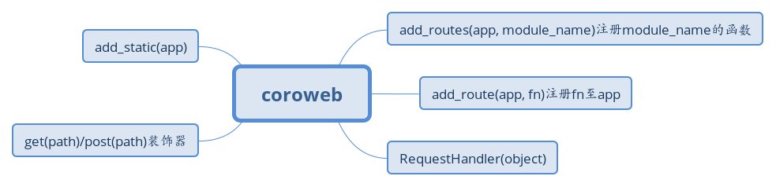
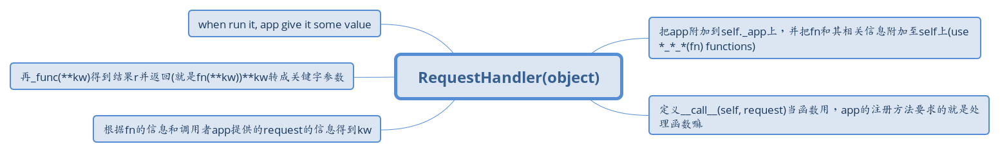
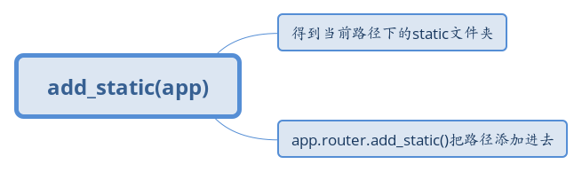

coroweb

add_routes(app, module_name)注册module_name的函数
通过module_name得到mod对象
遍历mode对象的所有属性
排除以_开头的
按属性名找到属性值(函数对象)
if callable(fn)(fn是@get/@post装饰的方法)
通过fn的__method__和__route__得到method和path
如果二者都存在则add_route(app, fn)把此方法注册到app上
add_route(app, fn)注册fn至app
取出fn的method和path，如果不是协程方法就协程一下
用app.router.add_route(method, path, 处理方法RequestHandler(app, fn))来注册
RequestHandler(object)

把app附加到self._app上，并把fn和其相关信息附加至self上(use *_*_*(fn) functions)
定义__call__(self, request)当函数用，app的注册方法要求的就是处理函数嘛
根据fn的信息和调用者app提供的request的信息得到kw
再_func(**kw)得到结果r并返回(就是fn(**kw))**kw转成关键字参数
when run it, app give it some value
get(path)/post(path)装饰器
把原来的方法嵌入到wrapper(*args, **kw)中
wrapper对象附加__method__和__route__属性值为'GET'/'POST'和path
返回这个装饰器
因为此装饰器也要接收自己的参数path
就得有一个返回装饰器的decorator
返回这个decorator。
fn嵌入wrapper嵌入decorator嵌入get/post
add_static(app)

得到当前路径下的static文件夹
app.router.add_static()把路径添加进去
%E6%B3%A8%E5%86%8Cmodule_name%E7%9A%84%E5%87%BD%E6%95%B0.jpg)


(fn%E6%98%AF@get @post%E8%A3%85%E9%A5%B0%E7%9A%84%E6%96%B9%E6%B3%95).jpg)
%E6%B3%A8%E5%86%8Cfn%E8%87%B3app.jpg)
 post(path)%E8%A3%85%E9%A5%B0%E5%99%A8.jpg)